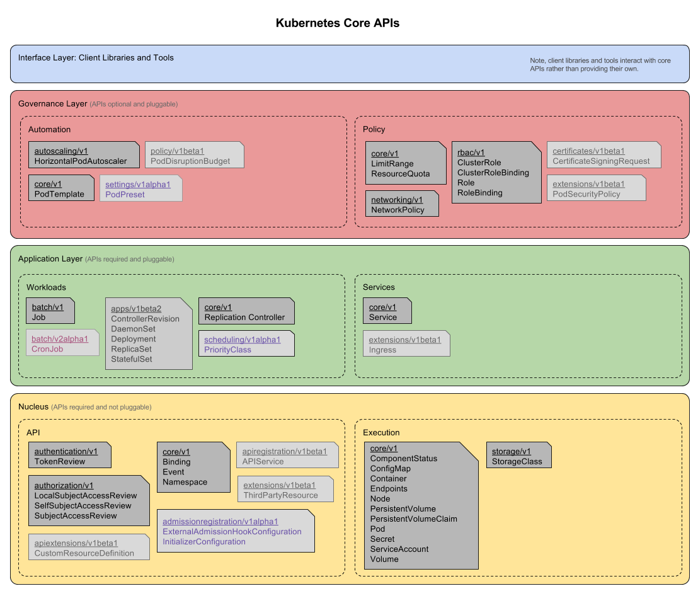
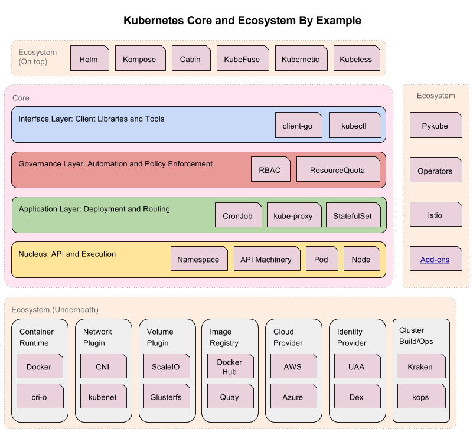

核心原理¶
介绍 Kubernetes 架构以及核心组件
Kubernetes 架构¶
Kubernetes 最初源于谷歌内部的 Brog，提供了面向应用的容器集群部署和管理系统。Kubernetes 的目标旨在消除编排物理/虚拟计算，网络和存储基础设施的负担，并使应用程序运营商和开发人员完全将重点放在以容器为中心的原语上进行自助运营。
Kubernetes 也提供稳定、兼容的基础（平台），用于构建定制化的 workflows 和更高级的自动化任务。Kubernetes 具备完善的集群管理能力，包括多层次的安全防护和准入机制、多组合应用支撑能力、透明的服务注册和服务发现机制、內建负载均衡器、故障发现和自我修复能力、服务滚动升级和在线扩容、可扩展的资源自动调度机制、多粒度的资源配额管理能力。Kubernentes 还提供完善的管理工具，涵盖开发、部署测试、运维监控等各个环节。
Borg 简介¶
Borg 是谷歌内部的大规模集群管理系统，负责对谷歌内部很多核心的调度和管理。Borg 的目的是让用户能够不必操心资源管理的问题，让他们专注于自己的核心业务，并且做到跨多个数据中心的资源利用率最大化。
Borg 主要由 BorgMaster、Borglet、Borgcfg 和 Scheduler 组成，如下图所示：

- BorgMaster 是整个集群的大脑，负责维护整个集群的状态，并将数据持久化到 Paxos 存储中；
- Scheduler 负责任务的调度，根据应用的特点将其调度到具体的机器上去；
- Borglet 负责真正运行任务（在容器中）
- Borgcfg 是Borg 的命令行工具，用于跟 Borg 系统交互，一般通过一个配置文件来提交任务。
Kubernetes 架构¶
Kubernetes 借鉴了 Borg 的设计概念，比如 Pod、Service、Labels 和单 Pod 单 IP 等。Kubernetes 的整体架构跟 Borg 非常像，如下图所示。

Kubernetes 主要由以下几个核心组件组成：
- etcd 保存了整个集群的状态；
- kube-apiserver 提供了资源操作的唯一入口，并提供认证、授权、访问控制、API 注册和发现等机制；
- kube-controller-manager 负责维护集群的状态，比如故障检测、自动扩展、滚动更新等；
- kube-scheduler 负责资源的调度，按照预定的调度策略将 Pod 调度到相应的机器上；
- kubelet 负责维持容器的生命周期，同时也负责 Volume (CVI) 和网络（CNI）的管理；
- Container runtime 负责镜像管理以及 Pod 和容器的真正运行（CRI），默认的容器运行时为 Docker；
- kube-proxy 负责为 Service 提供 cluster 内部的服务发现和负载均衡；

除了核心组件，还有一些推荐的 Add-ons:
- kube-dns 负责为整个集群提供 DNS 服务
- Ingress Controller 为服务提供外网入口
- Heapster 提供资源监控
- Dashboard 提供 GUI
- Federation 提供跨可用区的集群
- Fluentd-elasticsearch 提供集群日志采集、存储和查询
分层架构¶
Kubernetes 设计理念和功能其实就是一个类似 Linux 的分层架构，如下图所示。

核心层：Kubernetets 最核心的功能，对外提供 API 构建高层的应用，对内提插件式应用执行环境
应用层：部署（无状态应用、有状态应用、批处理任务、集群应用等）和路由（服务发现、DNS 解析等）
管理层：系统度量（如基础设施、容器和网络的度量），自动化（如自动扩展、动态 Provision 等）以及策略管理（RBAC、Quota、PSP、NetworkPolicy等）
接口层：kubectl 命令行工具、客户端 SDK 以及集群联邦
生态系统：在接口层之上的庞大容器集群管理调度的生态系统，可以划分为两个范畴
- Kubernetes 外部：日志、监控、配置管理、CI、CD、WorkFlow、FaaS、OTS 应用、ChatOps 等。
- Kubernetes 内部：CRI、CNI、CVI、镜像仓库、Cloud Provider、集群自身的配置和管理等。
核心组件¶

核心 API¶
生态系统¶
关于分层架构，可以关注下 Kubernetes 社区正在推进的 Kubernetes 架构线路图
设计原理¶
设计概念¶
分析和理解 Kubernetes 的设计理念可以使我们更深入的了解 Kubernetes 系统，更好地利用它管理分布式部署的云原生应用，另一方面也可以让我们借鉴其在分布式系统设计方面的经验。
API 设计原则¶
对于云计算系统，系统 API 实际上处于系统设计的统领地位。Kubernetes 集群系统每支持一项新功能，引入一项新技术，一定会新引入对应的 API 对象，支持对该功能的管理操作。理解掌握的 API，就好比抓住了 K8s 系统的牛鼻子。Kubernetes 系统 API 的设计有以下几条原则：
- 所有 API 应该是声明式的。声明式的操作，相对于命令式的操作，对于重复操作的效果是稳定的，这对于容易出现数据丢失或重复的分布式环境来说是很重要的。另外，声明式操作更容易被用户使用，可以使系统向用户隐藏实现的细节，同时也保留系统未来持久优化的可能性。此外，声明式的API还隐含了所有的 API 对象都是名词性质的，例如 Service、Volume 这些 API 都名词，这些名词描述了用户所期望得到的一个目标对象。
- API 对象是彼此互补而且可组合的。这实际上鼓励 API 对象尽量实现面向对象设计时的要求，即 “高内聚，松耦合”，对业务相关的概念有一个合适的分解，提高分解出来的对象的可重用性。
- 高层 API 以操作意图为基础设计。如何能够设计好 API，跟如何能用面向对象的方法设计好应用系统相通的地方，高层设计一定是从业务出发，而不是过早的从技术实现出发。因此，针对 Kubernetes 的高层 API 设计，一定是以 K8s 的业务为基础出发，也就是以系统调度管理容器的操作意图为基础设计。
- 低层 API 根据高层 API 的控制需要设计。设计实现低层 API 的目的，是为了被高层 API 使用，考虑减少冗余、提高重用性的目的，低层 API 的设计也要以需求为基础，要尽量抵抗受技术实现影响的诱惑。
- 尽量避免简单封装，不要有在外部 API 无法显式知道的内部隐藏的机制。简单的封装，实际没有提供新的功能，反而增加了对所封装 API 的依赖性。内部隐藏的机制也是非常不利于系统维护的设计方式，例如 StatefulSet 和 ReplicaSet，本来就是两种 Pod 集合，那么 kubernetes 就用不同 API 对象来定义它们，而不会说只用同一个 ReplicaSet，内部通过特殊的算法再来区分这个 ReplicaSet 是有状态还是无状态。
- API 操作复杂度与对象数量成正比。这一条主要是从系统性能角度考虑，要保证整个系统随着系统规模的扩大，性能不会迅速变慢到无法使用，那么最低的限定就是 API 的操作复杂度不能超过 O(N)，N是对象的数量，否则系统就不具备水平伸缩性了。
- API 对象状态不能依赖于网络连接状态。由于众所周知，在分布式环境下，网络连接断开是经常发生的事情，因此要保证 API 对象状态能应对网络的不稳定，API 对象的状态就不能依赖对于网络连接状态。
- 尽量避免让操作机制依赖全局状态，因为在分布式系统中要保证全局状态的同步数非常困难的。
控制机制设计原则¶
控制逻辑应该只依赖于当前状态
这是为了保证分布式系统的稳定可靠，对于经常出现局部错误的分布式系统，如果控制逻辑只依赖当前状态，那么就非常容易将一个暂时出现故障的系统恢复到正常状态，因为你只要将该系统重置到某个稳定状态，就可以自信的知道系统的所有控制逻辑会开始按照正常方式运行。
假设任何错误的可能，并做容错处理。
在一个分布式系统中出现局部和临时错误是大概率事件。错误可能来自于物理系统故障，外部系统故障也可能来自于系统自身的代码错误，依靠自己实现的代码不会出错来保证系统稳定其实也是难以实现的，因此要设计对任何可能错误的容处理。
尽量避免复杂状态机，控制逻辑不要依赖无法监控的内部状态。
因为分布式系统各个子系统都是不能严格通过程序内部保持同步的，所以如果两个子系统的控逻辑如果相互有影响，那么子系统就一定要能够互相访问到影响控制逻辑的状态，否则，就等同于系统里存在不确定的控制逻辑。
假设任何操作都可能被任何操作对象拒绝，甚至被错误解析。
由于分布式系统的复杂性以及各子系统的相对独立性，不同子系统经常来自不能的开发团队，所以不能奢望任何操作被另一个子系统以正确的方式处理，要保证出现错误的时候，操作级别的错误不会影响到系统稳定性。
每个模块都可以在出错后自动恢复。
由于分布式系统中无法保证系统各个模块是始终连接的，因此每个模块要有自我修复的能力，保证不会因为连接不到其他模块而自我崩溃。
每个模块都可以在必要时优雅地降级服务。
所谓优雅地降级服务，是对系统鲁棒性的要求，即要求在设计实现模块时划分清楚基本功能和高级功能，保证基本功能不会依赖高级功能，这样同时就保证了不会因为高级功能出现故障而导致整个模块崩溃。根据这种理念实现的系统，也更容易快速地增加新的高级功能，因为不必担心引入高级功能影响原有的基本功能。
架构设计原则¶
- 只有 apiserver 可以直接访问 etcd 存储，其他的服务必须通过 Kubernetes API 来访问集群状态。
- 单节点故障不应该影响集群的状态。
- 在没有新请求的情况下，所有组件应该在故障恢复后继续执行上次最后收到的请求（比如网络分区或服务重启等）
- 所有组件都应该在内存中保持所需要的状态，apiserver 将状态写入 etcd 存储，而其他组件则通过 apiserever 更新并监听所有的变化。
- 优先使用事件监听而不是轮循
引导（Bootstrapping）原则¶
- Self-hosting 是目标
- 减少依赖，特别是稳定运行的依赖
- 通过分层的原则管理依赖
- 循环依赖问题的原则
- 同时还接受其他方式的数据输入（比如本地文件等），这样在其他服务不可用时还可以手动配置引导服务
- 状态应该是可恢复或可重新发现的
- 支持简单的启动临时实例来创建稳态运行所需要的状态；使用分布式锁或文件锁来协调不同状态的切换（通常称为
pivoting技术） - 自动重启异常退出的服务，比如副本或者进程管理器等
核心技术概念和 API 对象¶
API 对象是 K8s 集群中的管理操作单元。K8s 集群系统每支持一项新功能，引入一项新技术，一定会新引入对应的 API 对象，支持对该功能的管理操作。例如副本集 ReplicaSet 对应的 API 对象是 RS。
每个 API 对象都有 3 大类属性：元数据 metadata、规范 spec 和状态 status。元数据是用来标识 API 对象的，每个对象都至少有3个元数据：namespace,name 和 uid；除此以外还有各种各样的标签 labels 用来标识和匹配不同的对象，例如用户可以用标签 env 来标识区分不同的服务部署环境，分别用 env=dev env=testing env=production 来标识开发、测试、生产的不同服务。规范描述了用户期望 K8s 集群中的分布式系统达到的理想状态（Desired State），例如用户可以通过复制控制器 Replication Controller 设置期望的 Pod 副本数为 3；status 描述了系统实际当前达到的状态（Status），例如系统当前实际的 Pod 副本数为 2；那么复本控制器当前的程序逻辑就是自动启动新的 Pod，争取达到复本数为 3。
K8s 中所有的配置都是通过 API 对象的 spec 去设置的，也就是用户通过配置系统的理想状态来改变系统，这是 K8s 重要设计理念之一，即所有的操作都是声明式（Declarative）的而不是命令式（Imperative）的。声明式操作在分布式系统中的好处是稳定，不怕丢操作或运行多次，例如设置副本数为 3 的操作运行多次也还是一个结果，而给副本数加1的操作就不是声明式的，运行多次结果就错了。
Pod¶
K8s 有很多技术概念，同时对应很多 API 对象，最重要的也是最基础的是微服务Pod。Pod 是在 K8s 集群中运行部署应用或服务的最小单元，它是可以支持多容器的。Pod 的设计概念是支持多个容器在一个 Pod 中共享网络地址和文件系统，可以通过进程间通信和文件共享这种简单高效的方式组合完成服务。Pod 对多容器的支持是 K8s 最基础的设计理念。比如你运行一个操作系统发行版的软件仓库，一个 Nginx 容器用来发布软件，另一个容器专门用来从源仓库做同步，这两个容器的镜像不太可能是一个团队开发的，但是他们一块工作才能提供一个微服务；这种情况下，不同团队各自开发构建自己的容器镜像，在部署的时候组合成一个微服务对外提供服务。
Pod 是 K8s 集群中所有业务类型的基础，可以看作运行在 K8s 集群中的小机器人，不同类型的业务就需要不同类型的小机器人去执行。目前 K8s 中的业务主要可以分为长期伺服器（long-running）、批处理型（batch）、节点后台支撑型（node-daemon）和有状态应用型（stateful application）；分别对应的小机器人控制器为 Deployment、Job、DaemonSet 和 StatefulSet，本文后面会一一介绍。
复制控制器（Replication Controller，RC）¶
RC 是 K8s 集群中最早的保证 Pod 高可用的 API 对象。通过监控运行中的 Pod 来保证集群中运行指定数目的 Pod 副本。指定的数目可以是多个也可以是一个；少于指定数目，RC 就会启动运行新的 Pod 副本；多于指定数目，RC 就会杀死多余的 Pod 副本。即使指定数目为1的情况下，通过 RC 运行 Pod 也比直接运行 Pod 更加明智，因为 RC 也可以发挥它高可用的能力，保证永远有1个Pod在运行。RC 是 K8s 较早期的基础概念，只适用于长期伺服型的业务类型，比如控制小机器人提供高可用的 Web 服务。
副本集（ReplicaSet，RS）¶
RS 是新一代的 RC，提供同样的高可用能力，区别主要在于RS后来居上，能支持更多种类的匹配模式。副本集对象一般不单独使用，而是作为 Deployment 的理想状态参数使用。
部署（Deployment）¶
部署表示用户对 K8s 集群的一次更新操作。部署是一个比 RS 应用模式更广的 API 对象，可以是创建一个新的服务，更新一个新的服务，也可以是滚动升级一个服务。滚动升级一个服务，实际是创建一个新的 RS，然后逐渐将新的 RS 中副本数增加到理想状态，将旧RS中的副本数减小到0的复合操作；这样一个复合操作用一个RS是不太好描述的，所以用一个更通用的 Deployment 来描述。以 K8s 的发展方向，未来对所有长期伺服型的业务的管理，都会通过 Deployment 来管理。
服务（Service）¶
RC、RS 和 Deployment 只是保证了支撑服务的微服务 Pod 的数量，但是没有解决如何访问这些服务的问题。一个 Pod 只是一个运行服务的实例，随时可能在一个节点上停止，在另一个节点以一个新的IP启动一个新的Pod，因此不能以确定的IP和端口号提供服务。要稳定地提供服务需要服务发现和负载均衡能力。服务发现完成的工作，是针对客户端访问的服务，找到对应的后端服务实例。在K8s集群中，客户端需要访问的服务就是 Service 对象，每个 Service 会对应一个集群内部有效的虚拟IP，集群内部通过虚拟IP访问一个服务。在 K8s 集群中微服务的负载均衡是由 Kube-proxy 实现的。Kube-proxy 是 K8s 集群内部的负载均衡器。它是一个分布式代理服务器，在 k8s 的每个节点上都有一个；这一设计体现了它的伸缩性优势，需要访问服务的节点越多，提供负载均衡能力的 Kube-proxy 就越多，高可用节点也随之增多。与之相比，我们平时在服务器使用反向代理作为负载均衡，还要进一步解决反向代理的高可用问题。
任务（Job）¶
Job 是 K8s 用来控制批处理型任务的 API 对象。批处理业务与长期伺服业务的主要区别是批处理业务的业务有头有尾，而长期伺服业务在用户不停止的情况下永远运行。Job 管理的 Pod 根据用户的设置吧任务完成就自动退出了。成功完成的标志根据不同的 spec.completions 策略而不同：但 Pod 型任务有一个 Pod 成功就标志完成；定数成功型任务保证有 N 个 任务全部成功；工作队列型任务根据应用确认的全局成功而标志成功。
后台支撑服务集（DaemonSet）¶
长期伺服型和批处理型服务的核心在业务应用，可能有些节点运行多个同类业务的 Pod，有些节点上没有这类 Pod 运行；而后台支撑型服务的核心关注点在 K8s 集群中的节点（物理机或虚拟机），要保证每个节点上都有一个此类 Pod 运行。节点可能是所有集群节点也可能是通过 nodeSelector 选定的一些特定节点，典型的后台支撑型服务包括，存储，日志和监控等在每个节点上支撑 K8s 集群上运行的服务。
有状态服务集（StatefulSet）¶
K8s 在 1.3 版本里发布了 Alpha 版的 PetSet 以支撑